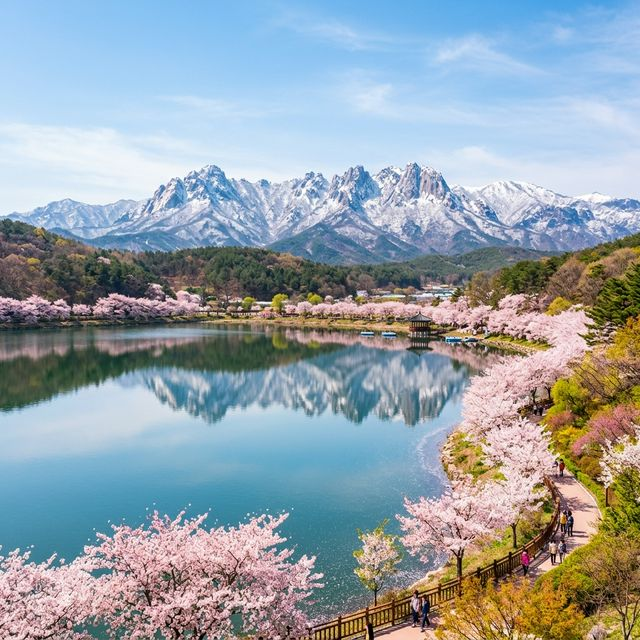

강원도 속초의 봄은 다른 곳보다 조금 늦게, 하지만 그 어느 곳보다 강렬하게 찾아옵니다. 특히 둘레가 8km에 달하는 거대한 석호인 영랑호(Yeongrangho)는 봄철이면 호수 전체가 벚꽃으로 둘러싸여 마법 같은 풍경을 선사하는데요. 파란 호수물과 하얀 벚꽃, 그리고 그 뒤로 병풍처럼 펼쳐진 설악산의 비경은 속초 영랑호 벚꽃축제의 상징과도 같습니다. 2026년 한층 더 풍성해진 프로그램으로 돌아온 영랑호 벚꽃축제 현장의 생생한 리포트와 함께, 인파를 피해 여유롭게 꽃구경을 즐길 수 있는 숨은 꿀팁들을 지금 공유해 드립니다.

올해 속초 영랑호 벚꽃축제는 4월 10일부터 12일까지 3일간 집중적으로 운영됩니다. 영랑호반 일대에서 펼쳐지는 이번 축제는 '자연과 쉼'을 테마로 하여 다양한 문화예술 공연과 체험 행사가 준비되어 있는데요. 특히 영랑호의 명물인 부교(Floating Bridge) 주변에서는 야간 조명쇼와 함께 수변 버스킹이 열려 방문객들의 눈과 귀를 즐겁게 합니다. 속초시는 축제 기간 동안 영랑호 순환도로의 일부 구간을 차 없는 거리로 운영하여 관광객들이 안전하게 보행하며 벚꽃을 감상할 수 있도록 배려하고 있습니다.
영랑호는 둘레가 8km로 매우 넓기 때문에 도보로 전체를 구경하기에는 다소 부담스러울 수 있습니다. 이때 가장 좋은 대안이 바로 자전거입니다. 축제장 인근 자전거 대여소에서 부모님과 함께 탈 수 있는 다인용 자전거부터 커플용 2인선 자전거까지 다양한 장비를 빌릴 수 있는데요. 시원한 호수 바람을 맞으며 8km의 벚꽃 터널을 한 바퀴 도는 기분은 말로 표현할 수 없는 해방감을 선사합니다. 중간중간 위치한 '범바위'나 '영랑정' 같은 정자에서 잠시 쉬어가며 사진을 담는 것도 호수 여행의 묘미입니다.
영랑호를 방문했다면 꼭 들러야 할 포토 스팟이 두 곳 있습니다. 첫 번째는 호수를 가로지르는 영랑호 부교입니다. 물 위를 걷는 듯한 기분을 느끼며 호수 한가운데서 설악산과 벚꽃을 360도 파노라마로 감상할 수 있어 사진 명소로 독보적인 인기를 누리고 있습니다. 두 번째는 속초 8경 중 하나인 범바위입니다. 거대한 바위가 웅크린 호랑이를 닮았다고 하여 붙여진 이름인데, 바위 위로 올라가 내려다보는 영랑호 전체의 분홍빛 테두리는 입을 다물지 못하게 할 만큼 장관입니다. 2026년 축제에서는 범바위 인근에 특별 포토존이 설치되어 더욱 다채로운 연출이 가능합니다.
| 명당 이름 | 특징 | 촬영 팁 |
|---|---|---|
| 영랑호 부교 | 호수 중앙 뷰 | 대청호와 서산을 배경으로 광각 촬영 |
| 범바위(Tiger Rock) | 하이앵글 전체 조망 | 바위 위에서 호수 전체를 배경으로 설정 |
| 보광사 인근 | 고즈넉한 사찰 벚꽃 | 사찰 건물과 벚꽃의 대비 활용 |
해가 저문 후의 영랑호는 또 다른 세계로 변모합니다. 수백 그루의 벚나무 아래 설치된 LED 조명이 일제히 불을 밝히면, 호수 물결 위로 오색찬란한 빛의 향연이 펼쳐지는데요. 2026년 축제에서는 '미디어 파사드' 기술을 도입하여 벚나무 사이사이로 환상적인 영상미를 더했습니다. 밤공기가 다소 쌀쌀할 수 있으므로 가벼운 겉옷을 준비하여 밤 산책을 즐겨보세요. 연인들에게는 이보다 더 로맨틱할 수 없는 데이트 코스가 될 것입니다. 특히 영랑호 리조트 인근에서 바라보는 야경은 사진가들 사이에서도 유명한 명당입니다.
꽃구경 후에는 식도락이 빠질 수 없죠. 영랑호에서 차로 5분 거리에 있는 속초 중앙시장(속초관광수산시장)은 먹거리의 천국입니다. 김이 모락모락 나는 닭강정부터 갓 쪄낸 대게, 오징어순대 등 속초를 대표하는 음식들이 가득합니다. 또한, 시장 옆으로 이어지는 청호동 아바이마을의 갯배 체험도 빼놓으면 섭섭한 코스입니다. 갯배를 타고 마을로 들어가 담백하고 구수한 아바이순대국으로 점심을 해결한다면 속초의 봄을 맛으로도 완벽하게 기억할 수 있을 것입니다.
지금까지 속초 영랑호 벚꽃축제 2026의 생생한 소식을 전해드렸습니다. 남부 지방의 벚꽃이 이미 지고 초록 잎이 돋아난 지금, 강원도 속초는 이제 막 기나긴 겨울잠에서 깨어나 가장 화려한 분홍색 옷으로 갈아입었습니다. 웅장한 설악산을 배경으로 끝없이 펼쳐진 영랑호의 벚꽃길은 여러분의 봄기운을 채워주기에 충분할 것입니다. 이번 주말, 사랑하는 사람과 함께 속초로 떠나보세요. 찰나의 순간이라 더 소중한 2026년의 벚꽃 엔딩이 영랑호에서 여러분을 기다리고 있습니다.